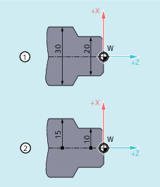

Beim Drehen können die Maße für die Planachse im Durchmesser (①) oder im Radius (②) angegeben sein:
Damit die Maßangaben direkt ohne Umrechnung aus der technischen Zeichnung in das NC-Programm übernommen werden können, wird über die modal wirksamen Befehle DIAMON, DIAM90, DIAMOF und DIAMCYCOF die kanalspezifische Durchmesser- oder Radius-Programmierung eingeschaltet.
| Hinweis |
Die kanalspezifische Durchmesser-/Radius-Programmierung bezieht sich auf die über MD20100 $MC_DIAMETER_AX_DEF als Planachse definierte Geometrieachse (→ siehe Angaben des Maschinenherstellers!). Über MD20100 kann pro Kanal nur eine Planachse definiert sein. |
| Befehl zum Einschalten der unabhängigen kanalspezifischen Durchmesser-Programmierung Die Wirkung von | |
| Maßangabe im Durchmesser | |
| Maßangabe im Durchmesser | |
| Befehl zum Einschalten der abhängigen kanalspezifischen Durchmesser-Programmierung Die Wirkung von | |
| Maßangabe im Durchmesser | |
| Maßangabe im Radius | |
| Befehl zum Ausschalten der kanalspezifischen Durchmesser-Programmierung Mit dem Ausschalten der Durchmesser-Programmierung wird die kanalspezifische Radius-Programmierung wirksam. Die Wirkung von | |
| Maßangabe im Radius | |
| Maßangabe im Radius | |
| Befehl zum Ausschalten der kanalspezifischen Durchmesser-Programmierung während der Zyklusbearbeitung Im Zyklus können somit Berechnungen immer im Radius erfolgen. Für die Positionsanzeige und die Basis-Satzanzeige bleibt der zuletzt aktive G-Befehl dieser Gruppe aktiv. | |
| Hinweis |
Mit |
| Programmcode | Kommentar |
|---|---|
| N10 G0 X0 Z0 | ; Startpunkt anfahren. |
| N20 DIAMOF | ; Durchmesser-Programmierung aus. |
| N30 G1 X30 S2000 M03 F0.7 | ; X-Achse = Planachse, Radius-Programmierung aktiv, Fahren auf Radius-Position X30. |
| N40 DIAMON | ; Für die Planachse ist Durchmesser-Programmierung aktiv. |
| N50 G1 X70 Z-20 | ; Fahren auf Durchmesserposition X70 und Z–20. |
| N60 Z-30 | |
| N70 DIAM90 | ; Durchmesser-Programmierung für Bezugsmaß und Radius-Programmierung für Kettenmaß. |
| N80 G91 X10 Z-20 | ; Kettenmaß aktiv. |
| N90 G90 X10 | ; Bezugsmaß aktiv. |
| N100 M30 | ; Programmende. |